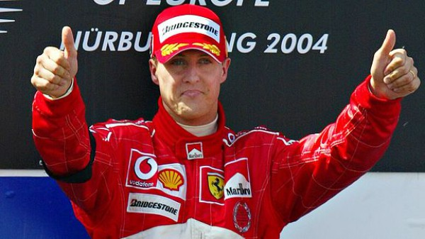
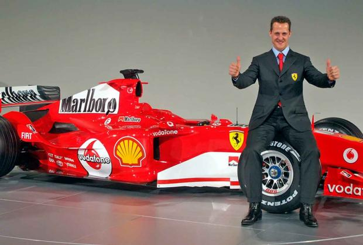

Міхаель Шумахер

Міхае́ль Шума́хер (3 січня 1969, Гюрт-Гермюльгайм, Німеччина) — семиразовий чемпіон світу, володар численних рекордів «Формули-1», один з найуспішніших пілотів. У пресі його часто називають «Червоним бароном», або просто «Шумі». Шумахер отримав прізвисько «Червоний барон» через віддалену зовнішню схожість, червоний колір боліда «Ferrari» і власну непереможність. У Першу світову війну «Червоним бароном» звали найкращого аса війни — барона Манфреда фон Ріхтгофена, який літав на аероплані червоного кольору.

Дебют
У 1991 році Еді Джордан запросив Шумахера виступити за свою команду «Jordan», на Гран-прі Бельгії, де Міхаель вразив усіх, кваліфікувавшись сьомим у своєму першому виступі на машині «Формули-1». Наступну гонку він провів вже за команду «Benetton-Ford», де і показав свій потенціал.
У 1992 році Міхаель виграв свою першу гонку в «Формулі-1» (знову на Гран-прі Бельгії). Цього року він завершив чемпіонат на 3-му місці.
У 1994 році Шумахер виграв свій перший чемпіонат за команду «Benetton», випередивши Деймона Хілла всього на одне очко після скандально відомого зіткнення з ним в останній гонці. У 1995 році він відстояв свій титул, випередивши найближчого суперника (ним знову був Деймон Хілл) вже на 30 очок. Це був одночасно і перший Кубок конструкторів для команди «Benetton» (і єдиний).
До того часу Міхаель вже мав 17 перемог, 21 подіум, і 10 поул-позишн. За 31 гран-прі він лише один раз фінішував четвертим.